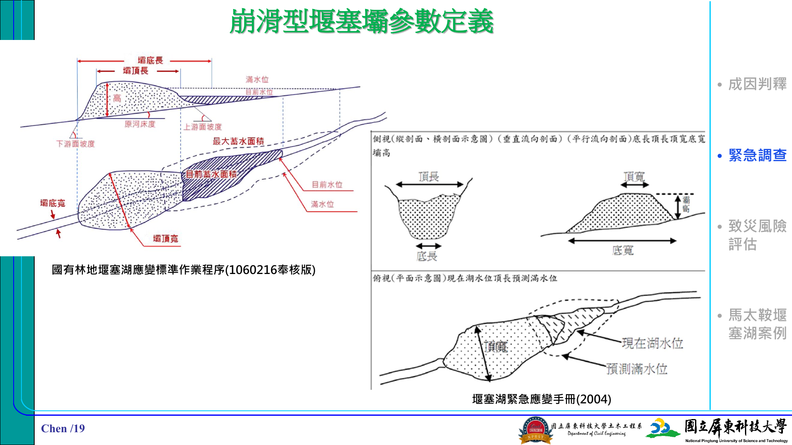
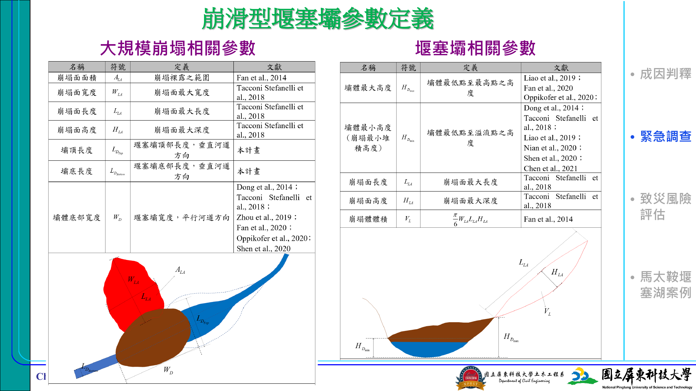
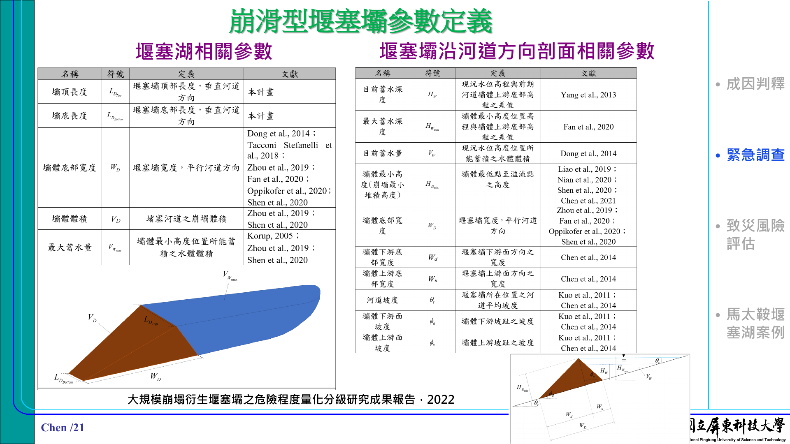
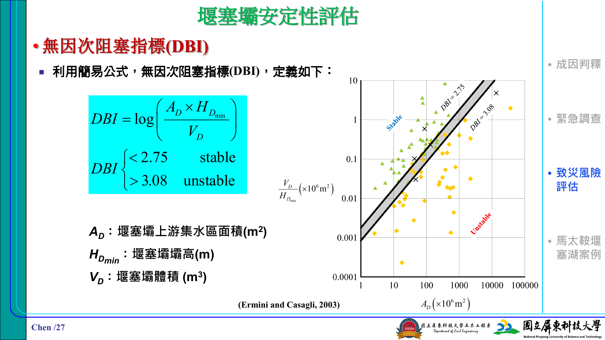
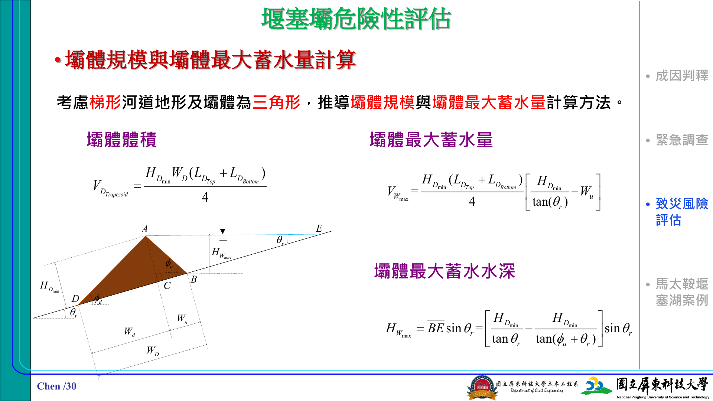
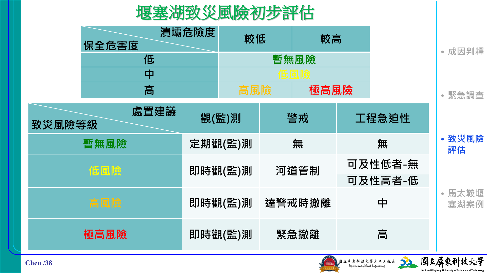
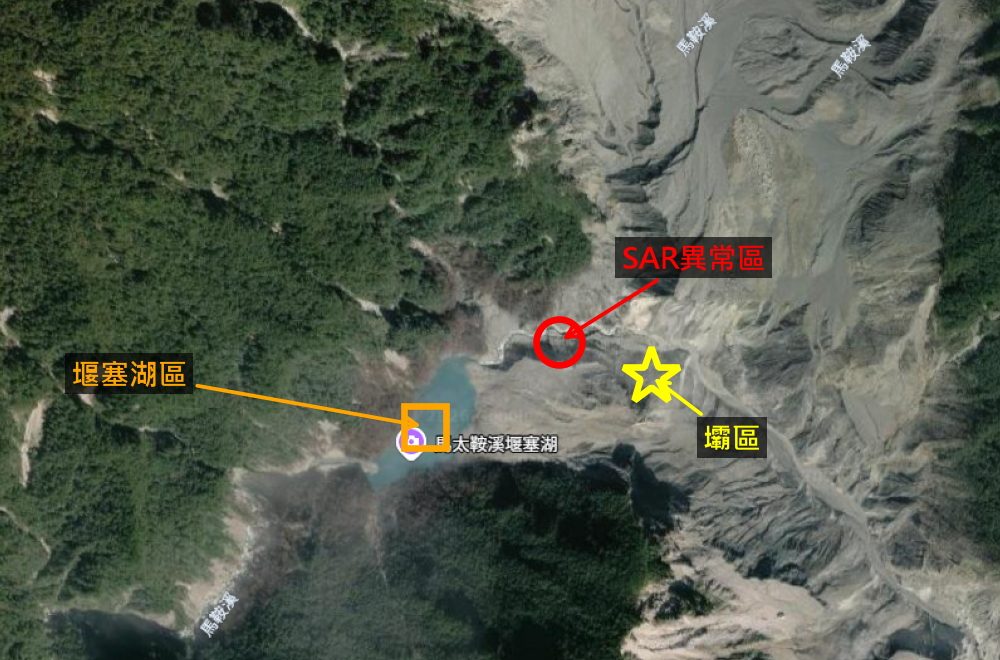

▣
資料可靠度
目前已納入壩體幾何、上游集水區、蓄水量、潰壩歷時、下游河寬與保全對象條件。
以堰塞湖專家判讀流程重組：先看風險結論，再回溯壩體參數、安定性指標、下游保全與處置策略。
預設採馬太鞍案例參數，展示從緊急調查、安定性判讀到保全危害度與處置建議的完整工作流。
目前已納入壩體幾何、上游集水區、蓄水量、潰壩歷時、下游河寬與保全對象條件。

對照壩高、壩頂長、壩底寬、蓄水面積與滿水位等調查欄位。

協助判讀崩塌面積、崩塌體積、壩體高度、寬度與長度量測位置。

用於理解蓄水面積、蓄水體積、河道縱坡與沿河道方向剖面。

說明上游集水區、壩高與壩體體積如何共同影響安定性初判。

提供壩體體積、最大蓄水深、河道幾何與潰口情境的概念對照。

對照潰壩危險度、保全危害度、觀測、警戒與工程急迫性建議。
可由坡地災害情資網、UAV DSM/DEM、災前災後 DEM 差分或現地水位尺建立庫容曲線。
以 0.5 m 或實測時間序列推估蓄水量變化，接近溢流口時需同步提高警戒。
縱剖檢查上游回水與壩頂溢流點；橫剖檢查左右岸高差、沖蝕與可能洩流路徑。
按「套入蓄水體積」可把目前庫容回填至 Vw，重新觸發洪峰與致災風險計算。
GLB/OBJ 模型、LAS/LAZ 點雲、DSM/DEM、正射影像、剖面線與水位面；大型資料建議放雲端後以連結管理。
確認壩頂溢流點、壩體左右岸接合、崩塌堆積厚度、可能滲流出水與下游沖刷通道。
模型需註明拍攝日期、座標系統、高程基準、解析度、控制點精度與遮蔽區，避免與風險參數混用。
既有 DSM 網格化與正射貼圖；未重新由衛星影像反演高程。兩期尚未完成穩定地表配準與精度評估，模型切換僅供視覺比較。
頁 19：壩體、蓄水位與剖面參數。
頁 20：崩塌土體與堰塞壩量測項目。
頁 21：蓄水與沿河道方向剖面。
頁 27：無因次阻塞指標與穩定/不穩定區間。
頁 30：壩體幾何與最大蓄水深推估。
頁 38：致災風險等級與應變建議。
尚未設定連線，點下方「連線設定」開始。
以下三格只存在您這台電腦的瀏覽器（localStorage），不會送出、也不會進GitHub。到 Copernicus Dashboard → User Settings → OAuth clients 建立一組「SPA」型態的Client；再到 Configuration Utility 用 Sentinel-2 L2A 範本建一個 Configuration，取得 Instance ID。
空間量測成果會直接匯入「調查參數」並更新風險演算；按「同步至調查參數」可手動強制同步一次。
以災後衛星影像或 UAV 正射圈繪裸露、裂隙擴張與滑動堆積源區；植生或陰影不清處以災前影像比對。
優先採災前/災後 DEM 差分；緊急階段可用 AL × 平均厚度 TL 初估，並以現地剖面或文獻範圍校核。
圈繪壩體足跡後，以足跡面積 × HDmin × 形狀係數推估；若未圈繪足跡，系統以 WD × LDTop × HDmin × 形狀係數初估。
HDmin 取溢流控制點與原河床高程差；S 取壩址上下游代表河段高程差除以沿河道量測長度。

底圖為衛星影像，三個監測點都緊鄰堰塞湖區周邊，彼此相距約300~350公尺。
與2015–2025年6月事件前基準水域比對，標出面積≥1 ha、寬度約50 m以上的新增水體。紅色為新生水域候選（前後月份持續出現，需人工確認），藍色為既有堰塞湖區，褐色為崩積／殘壩區表面積水，灰色為河道水域變遷或單月孤立訊號。以2025堰塞湖盲測，系統於114/08首度偵測（54.6 ha）。
怎麼看這張圖？衛星每個月都會拍到整個集水區。可切換兩種比較方式：「與往年同月比」是把本月植物綠度和 2019–2024 年同一個月份的平均相比（排除季節，看長期異常）；「與上個月比」是和前一個清晰月份相比（看這個月新發生的變化）。紅色代表植物變少（可能是新崩塌、土石堆積或河道沖刷），綠色代表變多。拖曳滑桿可把變化圖疊在當月衛星照片上對照；點選右側清單或圖上圓圈，兩邊會互相標示，按「放大」可近看該位置。所有標記都是電腦初篩，須再以地形差分（DEM）與無人機（UAV）現地確認。
以 2019–2024 年同月份 NDVI 平均與標準差為基準（去除季節性），z ≤ −2、ΔNDVI ≤ −0.20 且當月 NDVI < 0.25（達裸露定義）、面積 ≥ 1 ha 的負異常區塊列為新生崩塌、土石堆積或河道擴寬候選；已扣除參考林當月偏移與 1.5 km 局部背景（排除霾與殘留薄雲），並依 DEM 坡度坡向與影像太陽角遮除地形陰影、排除雲緣 200 m 內區塊；同一位置首次偵測後改列「持續」，不重複通報。復育分區以 114/10–12 為事件後初期，比較近三個可用月份：NDVI ≥ 0.30 或 ΔNDVI ≥ 0.15 為自然復育、0.05–0.15 為緩慢復育、< 0.05 建議人工植生評估。建議流程：NDVI 異常（面的篩選）→ DEM／DSM 差分（量的驗證）→ UAV 現地（點的確認）。
「與上個月比」：與前 3 個月內最近一個清晰月份（非品質疑慮、流域覆蓋 ≥ 40%）比較，扣除穩定林地兩月的整體綠度差；ΔNDVI ≤ −0.20 為明顯減少、≥ +0.20 為明顯增加。新增裸露區塊＝上月 NDVI ≥ 0.35、本月 < 0.25、且扣除 1.5 km 局部背景後仍下降 ≥ 0.20、面積 ≥ 1 ha、距雲 200 m 以上；同一位置曾出現過者列為「反覆裸露」（多為耕作或季節性）。
點選列可在左圖標示位置；「放大」會疊合當月衛星影像近看。
每月自動更新後，系統會產生 PDF 月報（指標、影像、趨勢、新生水域清單）並寄給管理者與以下登記的信箱。新增或移除信箱需輸入權限密碼；密碼於伺服器端驗證，連續錯誤 5 次將暫停 30 分鐘。
「立即寄送最新月報」可隨時補寄（需權限密碼，每日最多 5 次）：E-mail 欄空白＝寄給管理者＋全部名單；填入 E-mail＝只寄給該信箱。
載入中…
異常來源：Sentinel-2 新生水域／新生崩塌候選、SAR 黃紅燈警戒，以及現地人工通報。狀態公開顯示；回報人與查證說明需權限密碼查看。
依目前調查參數與風險演算，產生可貼入會議、通報或現地討論的專家式回覆。
以本頁案件參數＋Sentinel-2／SAR 監測摘要＋異常通報為依據，由 Google Gemini 2.5 Flash（免費額度，每日上限 60 次）產生判讀；問題請輸入於上方「提問內容」。免費方案的輸入內容可能被 Google 用於改善服務，請勿輸入個資或機敏資料。